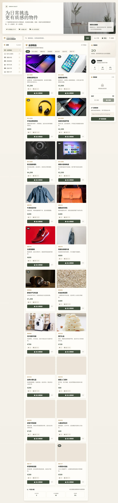

← 全部作品


在线演示的真实截图 · 桌面端与手机端
把商品、订单与库存，放进清晰的工作流。
面向商品与运营管理的 Web 工作空间。围绕列表浏览、数据同步和表单配置，组织清晰的状态与连贯的操作。
- 角色ROLE
- 前端负责人
- 周期PERIOD
- 2024.06 — 2025.04
- 材料STACK
- React 18TypeScriptZustandReact QueryTailwind CSS
00实机截图 / SCREENS
不是示意图，
是能打开的成品。
以下截图都来自在线演示，可以直接打开体验。 打开在线演示 ↗



OP.0101使用场景
信息很多，操作需要保持清晰。
商品管理涉及列表查找、订单变化和库存更新。界面需要让使用者快速找到重点，也需要在多种操作同时发生时保持清楚的数据状态。
OP.0202本人职责
从应用结构到关键交互。
担任前端负责人，工作覆盖前端架构、大规模列表展示、实时消息与拖拽表单。下面按不同职责拆解实现思路。
OP.0303实现选择
让不同类型的状态，各有归属。
React 与 TypeScript 负责组件与类型边界；Zustand 组织界面状态；React Query 处理服务端数据请求与缓存。区分这两类状态，有助于理解数据从哪里来、什么时候更新。
- 01商品、订单、库存
- 02请求与缓存，实时消息
- 03界面状态与可见列表
OP.0404关键交互
把技术选择落实到日常操作。
列表采用虚拟滚动，只渲染可见的商品行；订单和库存变化通过 WebSocket 连接到界面；React DnD 支持可配置的表单布局。每项选择都对应一个明确的使用场景。
- 01
列表浏览
只渲染当前可见的商品行。
- 02
实时更新
把变化送到正在操作的地方。
- 03
表单配置
用拖拽组织需要的布局。
OP.0505继续了解
NEXT PART · WW-02微信小程序开发工具